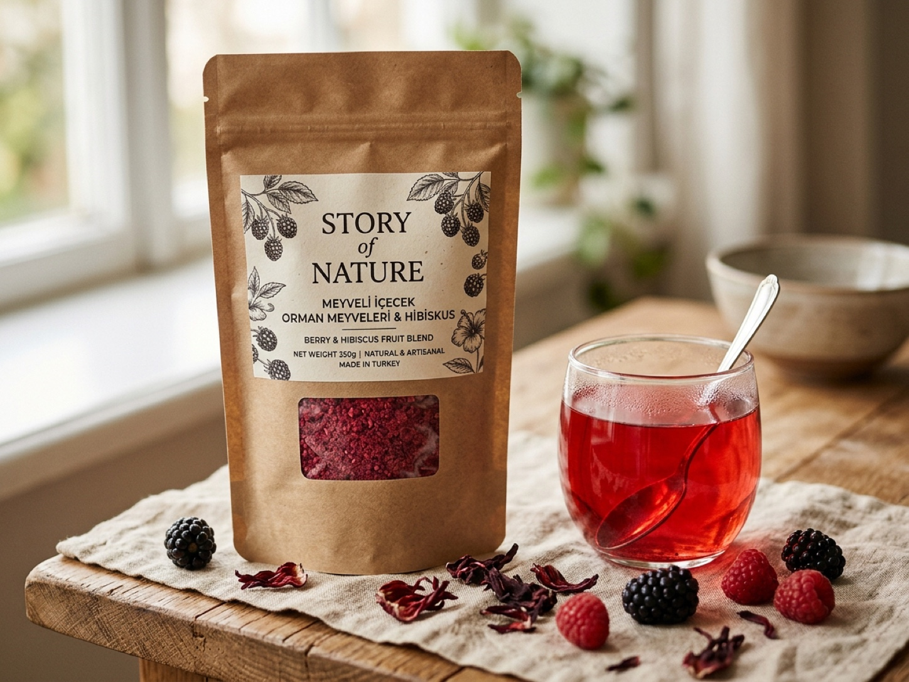
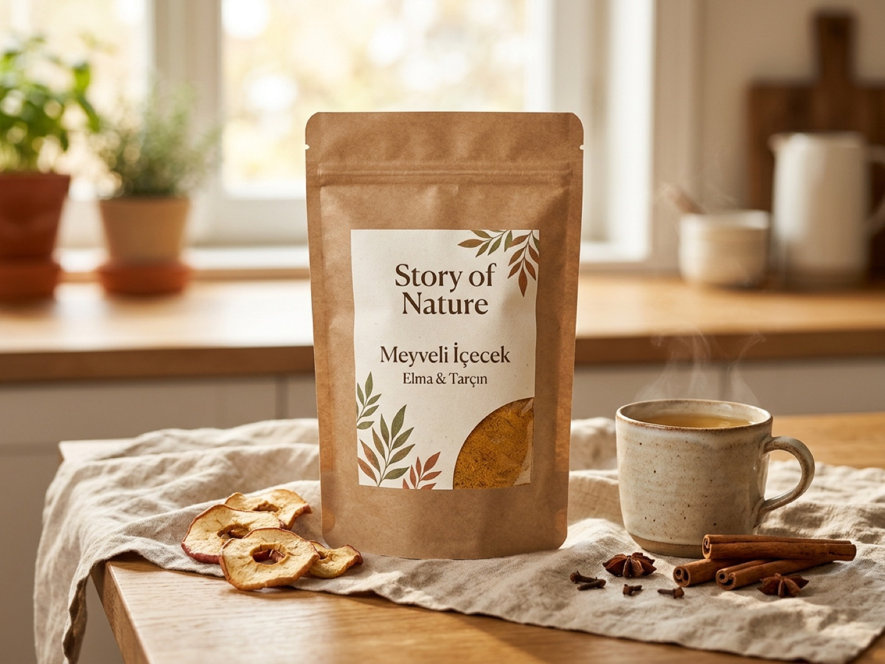
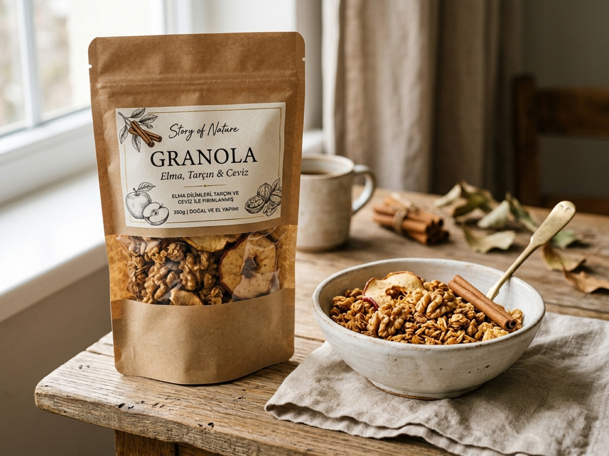
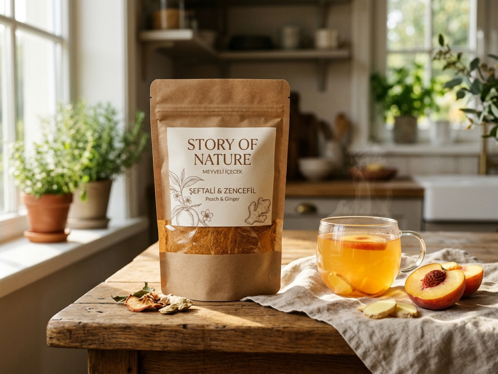
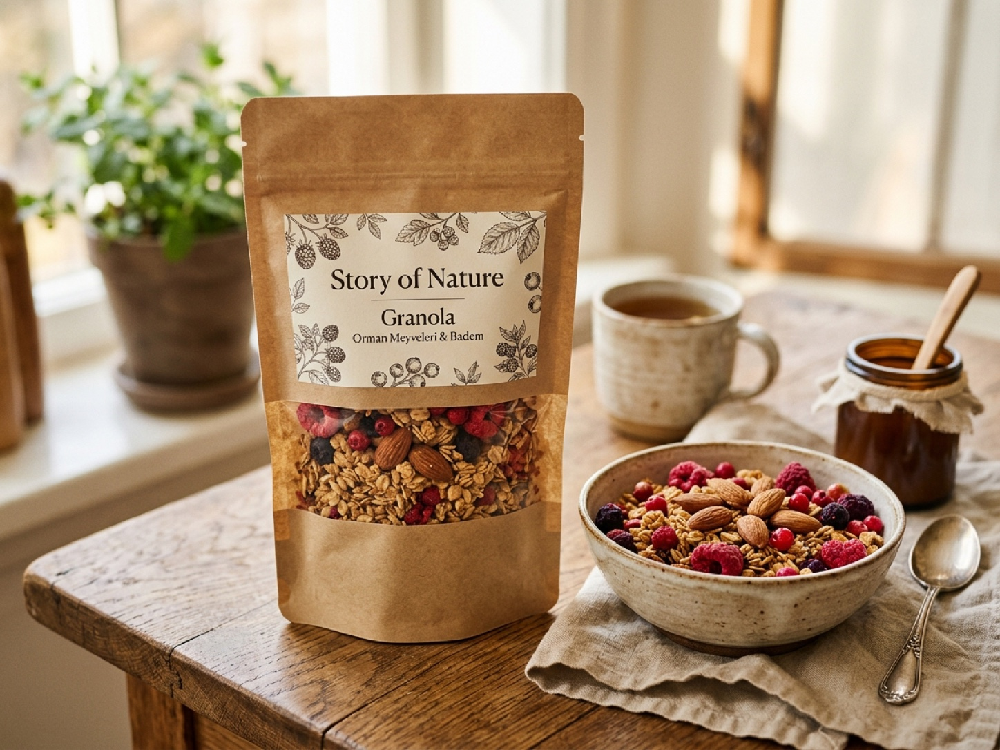
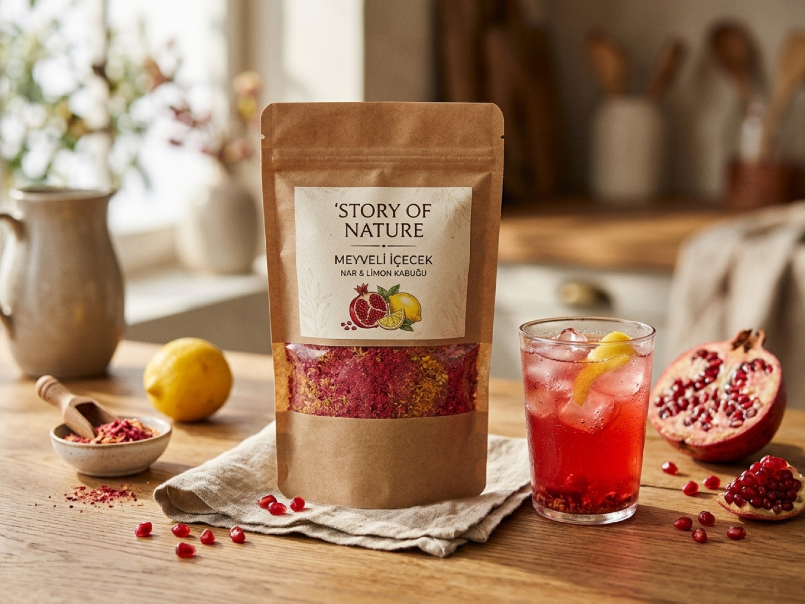
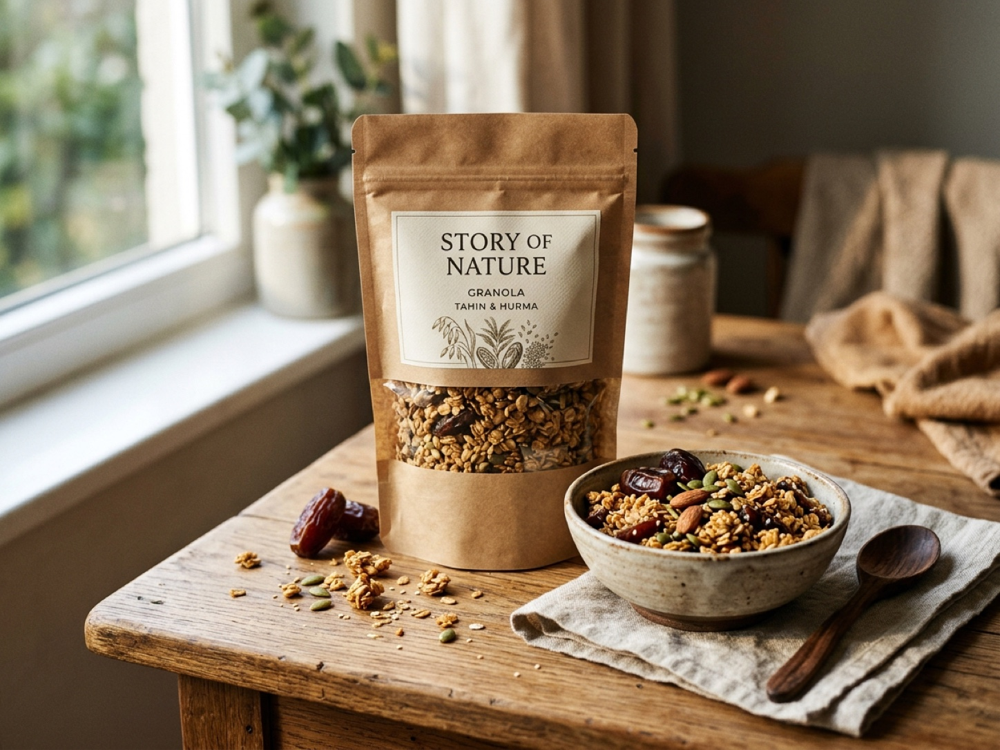
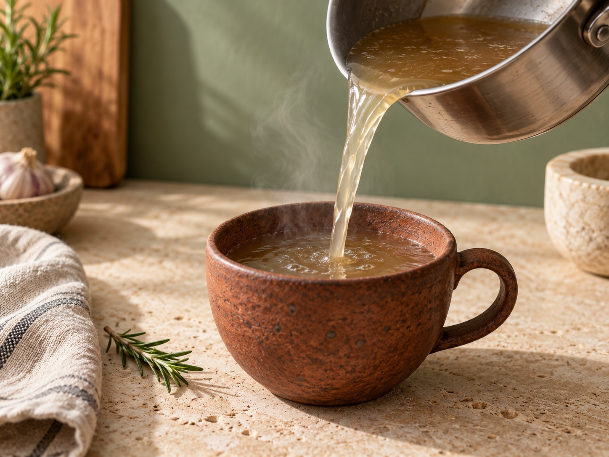

Cam kavanoz
Çorba, pilav ve günlük mutfak tarifleri
Cam kavanoz
Çorba, pilav ve günlük mutfak tarifleri
İlikli kemik suları
Sade
Kemik suyunun kendi karakterini öne çıkaran yalın lezzet yönü.
Dengeli, et suyu karakterinde
Yaklaşık fiyat249 TL300 ml
❧ DOĞADAN İLHAMLA · ZANAATKÂR SOFRA KOLEKSİYONU
İlikli kemik suyundan botanik bitki çaylarına, meyveli sıcak-soğuk içeceklerden fırınlanmış granolaya, tahin ve meyve ezmelerine uzanan 6 özenli seri ve 30 lezzet.
STORY OF NATUREsofraya




BİR KAVANOZDAN, BİR FİNCANDAN FAZLASI
6 seri, 30 ayrı lezzet.
Kategoriye göre filtrele, aradığın notayı keşfet veya hızlıca incele.
30 lezzet gösteriliyor
Cam kavanoz
Çorba, pilav ve günlük mutfak tarifleri
İlikli kemik suları
Kemik suyunun kendi karakterini öne çıkaran yalın lezzet yönü.
Dengeli, et suyu karakterinde
Pencereli kraft
Günün sonunda sakin bir mola
Bitki çayları
Çiçeksi ve hafif otsu bir fincan.
Çiçeksi, yumuşak
Cam kavanoz
Ekmek üstü, kahvaltı ve sos tarifleri
Tahin & kuruyemiş
Susamın kavruk ve belirgin karakteri.
Kavrulmuş susam, yoğun
Cam kavanoz
Yoğurt, yulaf ve kızarmış ekmek
Meyve ezmeleri
Elmanın tanıdık lezzetine tarçın dokunuşu.
Sıcak baharatlı, meyvemsi
Meyveli içecekler
Kırmızı meyve tozları ve hibiskus yaprağının canlı, yakut renkli uyumu.
Mayhoş, kırmızı meyveli
Pencereli kraft poşet
Yoğurt kâsesi, süt veya sade fındık ezmesi eşliğinde
Granola & kahvaltı
Kavrulmuş bütün fındıklar, ham kakao parçacıkları ve kıtır yulaf kümeleri.
Kavruk fındık, yoğun kakao
 Cam kavanoz
Kullanım uygunluğu ve porsiyon sağlık uzmanıyla değerlendirilmelidir
Cam kavanoz
Kullanım uygunluğu ve porsiyon sağlık uzmanıyla değerlendirilmelidir
İlikli kemik suları
Bebek kullanımına yönelik sade içerik ve küçük porsiyon talepleri için ayrı seçenek.
Sade tarif talebi
 Pencereli kraft
Gün içi sıcak bir fincan
Pencereli kraft
Gün içi sıcak bir fincan
Bitki çayları
Sıcak baharat ve narenciye notalarının birlikteliği.
Baharatlı, narenciye notalı
 Cam kavanoz
Kızarmış ekmek, yulaf ve yoğurt
Cam kavanoz
Kızarmış ekmek, yulaf ve yoğurt
Tahin & kuruyemiş
Düzgün sürülebilir doku arayanlar için.
Kavrulmuş yer fıstığı, pürüzsüz
 Cam kavanoz
Kahvaltı ve yoğurt sunumları
Cam kavanoz
Kahvaltı ve yoğurt sunumları
Meyve ezmeleri
Kayısının belirgin meyve karakteri.
Meyvemsi, hafif mayhoş

Pencereli kraft poşet Sıcak kış fincanı veya ılık süt/su karışımıMeyveli içecekler
Kurutulmuş elma tozu ve Seylan tarçınının ısıtan, yumuşak içimli dengesi.
Sıcak baharatlı, tatlı elma notalı

Pencereli kraft poşet Sıcak süt, süzme yoğurt ve elma ezmesiyleGranola & kahvaltı
Kurutulmuş elma dilimleri, ceviz içi ve tarçınla fırınlanmış sıcak kahvaltı klasiği.
Tarçınlı, cevizli, kıtır doku
 Cam kavanoz
Kök sebze çorbaları ve baharatlı tarifler
Cam kavanoz
Kök sebze çorbaları ve baharatlı tarifler
İlikli kemik suları
Kök baharatların sıcak ve hafif keskin karakteri.
Topraksı, sıcak baharatlı
 Pencereli kraft
Tarifine uygun sıcak veya soğuk sunum
Pencereli kraft
Tarifine uygun sıcak veya soğuk sunum
Bitki çayları
Meyvemsi ve hafif mayhoş bir fincan.
Meyvemsi, mayhoş
 Cam kavanoz
Ekmek üstü ve atıştırmalık sunumları
Cam kavanoz
Ekmek üstü ve atıştırmalık sunumları
Tahin & kuruyemiş
Küçük fıstık parçalarıyla daha belirgin doku.
Kavrulmuş yer fıstığı, parçacıklı
 Cam kavanoz
Ekmek üstü ve peynir eşlikçisi
Cam kavanoz
Ekmek üstü ve peynir eşlikçisi
Meyve ezmeleri
İncirin yoğun ve taneli karakteri.
Belirgin, meyvemsi

Pencereli kraft poşet Soğuk yaz bardağı veya ılık gün ortası molasıMeyveli içecekler
Şeftalinin kadifemsi meyvemsiliğiyle zencefilin ferahlatıcı dokunuşu.
Meyvemsi, hafif zencefil ferahlığı

Pencereli kraft poşet Kefir, yoğurt veya taze meyveli kahvaltı kâseleriGranola & kahvaltı
Kırmızı orman meyvelerinin hafif mayhoşluğu ve kavrulmuş badem dilimleri.
Meyvemsi, kavrulmuş bademli
 Cam kavanoz
Fırın sebzeler, mantarlı tarifler ve soslar
Cam kavanoz
Fırın sebzeler, mantarlı tarifler ve soslar
İlikli kemik suları
Akdeniz otlarının aromatik dokunuşu.
Otsu, aromatik
 Pencereli kraft
Gün içinde aromatik bir mola
Pencereli kraft
Gün içinde aromatik bir mola
Bitki çayları
Nanenin ferah aroması ve rezenenin belirgin karakteri.
Ferah, anason notalı
 Cam kavanoz
Kahvaltı ve meyve eşlikçisi
Cam kavanoz
Kahvaltı ve meyve eşlikçisi
Tahin & kuruyemiş
Fındığın kendi karakterini öne çıkaran sade yön.
Kavrulmuş fındık, yoğun
 Cam kavanoz
Yoğurt ve kahvaltı tarifleri
Cam kavanoz
Yoğurt ve kahvaltı tarifleri
Meyve ezmeleri
Armut lezzetine yumuşak vanilya notası.
Yumuşak, aromatik

Pencereli kraft poşet Soğuk su, buz ve taze nane yaprağıyla sunumMeyveli içecekler
Narın buruk meyvemsiliği ve limon kabuğunun narenciye tazeliği.
Canlı, narenciye ve nar notalı

Pencereli kraft poşet Sade yoğurt ve tahin gezdirilmiş kâse sunumuGranola & kahvaltı
Susam tahini ve hurma özüyle harmanlanmış, kabak çekirdekli geleneksel dokunuş.
Kavruk susam, karamelimsi hurma
 Cam kavanoz
Çorba, bulgur pilavı ve güveç
Cam kavanoz
Çorba, bulgur pilavı ve güveç
İlikli kemik suları
Sebze notalarının eşlik ettiği ilikli kemik suyu seçeneği.
Yuvarlak, sebze notalı
 Pencereli kraft
Demleme talimatına uygun bir fincan
Pencereli kraft
Demleme talimatına uygun bir fincan
Bitki çayları
Otsu karaktere hafif narenciye dokunuşu.
Otsu, narenciye notalı
 Cam kavanoz
Ekmek üstü ve tatlı tarifleri
Cam kavanoz
Ekmek üstü ve tatlı tarifleri
Tahin & kuruyemiş
Fındığı kakao ve hurma notalarıyla buluşturan seçenek.
Kakaolu, meyvemsi
 Cam kavanoz
Yoğurt, yulaf ve ekmek üstü
Cam kavanoz
Yoğurt, yulaf ve ekmek üstü
Meyve ezmeleri
Mayhoş ve meyvemsi notaları bir araya getiren seçki.
Meyvemsi, mayhoş
 Cam kavanoz
Fincanda sıcak sunum ve hafif pilav tarifleri
Cam kavanoz
Fincanda sıcak sunum ve hafif pilav tarifleri
İlikli kemik suları
Limonun ferah notası ve defnenin otsu karakteri.
Narenciye notalı, hafif otsu
 Pencereli kraft
Gün içinde sıcak bir fincan
Pencereli kraft
Gün içinde sıcak bir fincan
Bitki çayları
Ihlamurun çiçeksi notalarına kuşburnunun hafif mayhoş dokunuşu.
Çiçeksi, meyvemsi
Başka bir kelime dene veya tüm koleksiyona dön.
Görseller temsili sunumdur. Fiyatlar belirtilen gramaj için yaklaşık tutarlardır; nihai fiyat ve teslimat teklif sırasında netleşir.
ÖZEL TASARIM KRAFT KUTULAR & SEÇKİLER
İlk taslaktaki özel kraft kutu deneyimini 6 farklı sofra ve mutfak temasıyla çeşitlendirdik.
Tek tıkla listene ekle veya kendi kutunu kendin oluştur.
 ÖZEL KRAFT KUTU
ÖZEL KRAFT KUTU
Özel kraft hediye kutusu · 5 ürün
İlk taslaktaki özel kraft kutu sunumuyla: 2× Sade Kemik Suyu, 1× Papatya & Melisa Çayı, 1× Sade Tahin ve 1× Fındık & Kakao Granola.
Yaklaşık kutu tutarı1.195 TL
Kutu içeriğini incele ↗ KOLEKSİYON SEÇKİSİ
KOLEKSİYON SEÇKİSİ
6 ana gruptan 6 imza lezzet
Sade Kemik Suyu, Papatya & Melisa, Pürüzsüz Yer Fıstığı, Elma & Tarçın Ezmesi, Orman Meyveli İçecek ve Fındık & Kakao Granola.
Yaklaşık kutu tutarı1.344 TL
Kutu içeriğini incele ↗
MUTFAK TEMELİ
4 farklı kemik suyu lezzeti
Sade, Zerdeçal & Zencefil, Biberiye & Kekik ve Sebzeli Kemik Suyu. Tek seriden dört farklı yön.
Yaklaşık kutu tutarı1.076 TL
Kutu içeriğini incele ↗
KAHVALTI RİTÜELİ
5 parçalık zengin kahvaltı sofrası
Sade Tahin, Kakao & Hurmalı Fındık, Elma & Tarçın Ezmesi, Kayısı Ezmesi ve Elma, Tarçın & Ceviz Granola.
Yaklaşık kutu tutarı1.255 TL
Kutu içeriğini incele ↗BİRLİKTE DAHA GÜZEL
Yeni lezzetlerle tanışmak ya da kendi sofranı tamamlamak için. Hazır kraft kutulardan birini seç, istersen 6 kategoriden dilediğin ürünleri birleştir.
Setleri & özel kutuları keşfet ↗ Kendi seçkimi oluştur +
ZANAATKÂR SOFRA KUTUSU Altı farklı dünyaya sıcak bir davet.
TOHUMDAN KAVANOZA · MUTFAK DİSİPLİNİ
Her seride malzemenin kendi doğasına saygı duyan, aceleye getirilmemiş hazırlık süreci.
Kemik sularında ilikli kemikler ve taze kök sebzeler; çay ve içeceklerde bütün yapraklar ile kurutulmuş meyveler; ezme ve granolalarda ise kavurma profili dengelenmiş kuruyemişler kullanılır.
HER GÜNÜN KENDİ LEZZETİ VAR

01 / İLİKLİ KEMİK SUYU
02 / BOTANİK HARMAN
03 / GELENEKSEL EZME
04 / SOFRA SEÇKİSİ
05 / SICAK & SOĞUK MEYVE HARMANI
06 / FIRINLANMIŞ KAHVALTI SEÇKİSİ
KEMİK SUYUNU YAKINDAN TANI
Soğukta jelimsi, ısınınca akışkan ve berrak. Kemik suyunun kıvamı ve rengi tarife, süzmeye ve sıcaklığa göre değişebilir.
Soğukta jel oluşumu tarife ve yoğunluğa göre değişir.
Kemik suyu rehberini oku ↗
PLANLANAN PROGRAM · HENÜZ BAŞLAMADI
500 TL ve üzeri siparişler için doğaya bir fidan desteği sunmayı hedefliyoruz. Teklif listende 500 TL eşiğine yaklaştığında ilerlemeni anlık olarak görebilirsin; resmi kurum iş birliği ve uygulama koşulları netleştiğinde duyuracağız.
DAHA BÜYÜK SOFRALAR İÇİN
Restoran, kafe, ofis ve kurumsal hediye kutuları için ürünlerini ve adetlerini paylaş. Sana uygun toplu teklifi birlikte hazırlayalım.
BİRLİKTE NETLEŞTİRELİM
Lezzetinden sunumuna, özel kraft kutulardan teslimata kadar.
Kartlardaki yaklaşık fiyatlarla seçkini oluştur. Listende ürünlerin tahmini toplamını görebilirsin. WhatsApp üzerinden nihai fiyat, içerik, uygunluk ve teslimatı teyit ederek sipariş talebini iletebilirsin.
Evet. Hazır kraft kutu seçkilerinden birini doğrudan listene ekleyebilir veya Kendi seçkini oluştur bölümünde 6 farklı seriden dilediğin çeşit ve adedi birleştirebilirsin.
Bitki çayları ve meyveli içecek harmanları doğal kahverengi, pencereli kraft poşetlerde sunulur. Meyveli içecek harmanları tarifine göre hem sıcak suda hem de soğuk/buzlu bardak sunumlarında hazırlanabilir.
Bebek İçin Sade Seri üzerinden talep iletebilirsin. Tam içerik, tuz, alerjen ve saklama bilgilerini sipariş öncesinde iste. Kişisel kullanım uygunluğu sağlık uzmanıyla değerlendirilmelidir.
Tam reçete, alerjenler, saklama sıcaklığı, açıldıktan sonra tüketim süresi ve son tüketim tarihi ürüne özeldir. Teklif sırasında güncel ambalaj bilgisini iste ve ürün etiketini esas al.
STORY OF NATURE